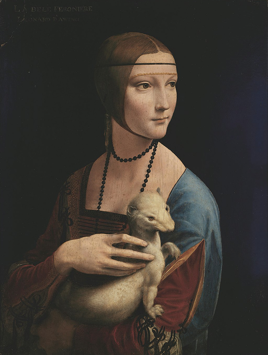
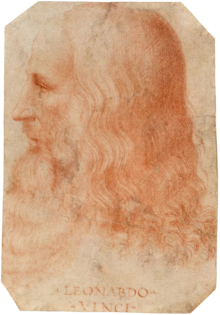

Lady with an Ermine
Leonardo da Vinc

Lady with an Ermine
Leonardo da Vinc
1489
The Lady with an Ermine (Italian: Dama con l'ermellino [ˈdaːma kon lermelˈliːno]; Polish: Dama z gronostajem) is a portrait painting widely attributed to the Italian Renaissance artist Leonardo da Vinci. Dated to c. 1489–1491, the work is painted in oils on a panel of walnut wood. Its subject is Cecilia Gallerani, a mistress of Ludovico Sforza ("Il Moro"), Duke of Milan; Leonardo was painter to the Sforza court at the time of its execution. It is one of only four surviving portraits of women painted by Leonardo, the others being Ginevra de' Benci, La Belle Ferronnière and the Mona Lisa.
GO TO SOURCE